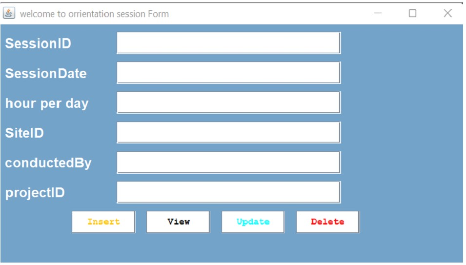

DATABASE WITH JAVA
1.DATABASE
INTRODUCTION
The Employee Orientation Tracker is a comprehensive system designed to streamline and monitor the daily routines and activities of employees within an organization. It provides a structured approach to tracking employee progress, ensuring adherence to company policies, and facilitating effective communication between employees and management.Table with its Form
Database Name: employee_orientation_tracker
1.admins Table:
this the firstly step of system where system user allowed to acess all function of system ,on this satge user asked to enter into the system by entering username and password then if both are correct direct to index page where all actions must be performed if not system gives him/her error message apart from java then in database this table holds all infromation of users like names,contact, role etc.
 |  |
2.employee table:
Under this stage the system admin or other authorized users will insert, view,delete, or update employee table in the system using generated information addition on that admin can view,upadate,delete infromation which must be insterted by inserting projectID and retrieve infromation to be displayed aprt from java then in databse this table holds all infromation of employee .
3.project Table:
Under this page the system admin or other authorized users will insert, view,delete, or update projects table in the system using generated information addition on that admin can view,upadate,delete infromation which must be isterted by inserting projectID and retrieve infromation to be displayed apart from java then in databse this table holds all infromation of project helds in company or in system.
4.site Table:
Under this page the system admin or other authorized users will insert, view,delete, or update sites table in the system using generated information addition on that admin can view,upadate,delete infromation which must be isterted by inserting SiteID and retrieve infromation to be apart from java then in databse this table holds all infromation of sites helds in company working routine or in system.
5.orientation session Table:
Under this stage the system admin or other authorized users will insert, view,delete, or update orientationsession table in the system using generated information addition on that admin can view,upadate,delete infromation which must be isterted by inserting SessionID and retrieve infromation to be displayed apart from java then in databse this table holds all infromation of sites helds in company working routine or in system.